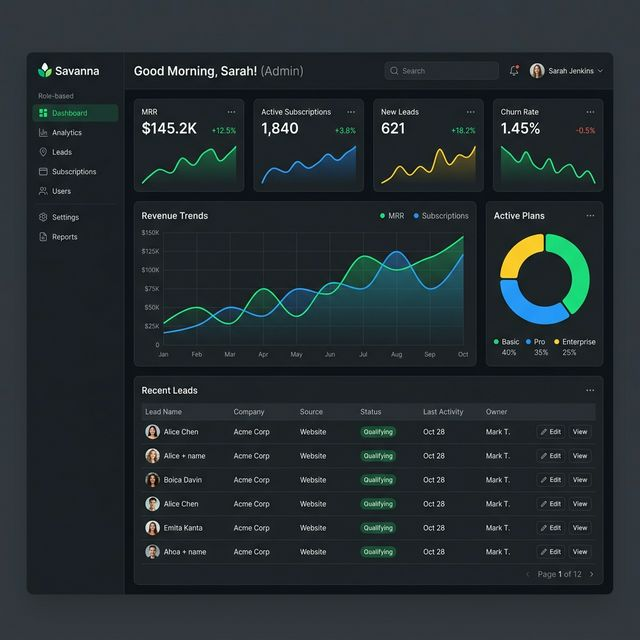
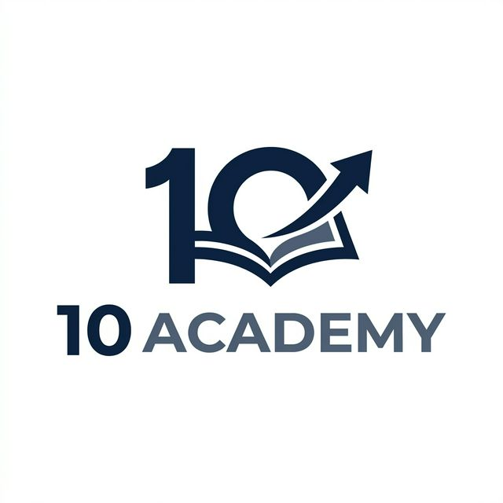
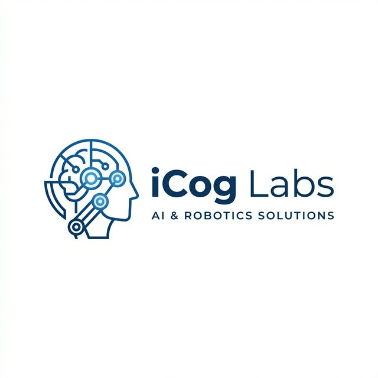
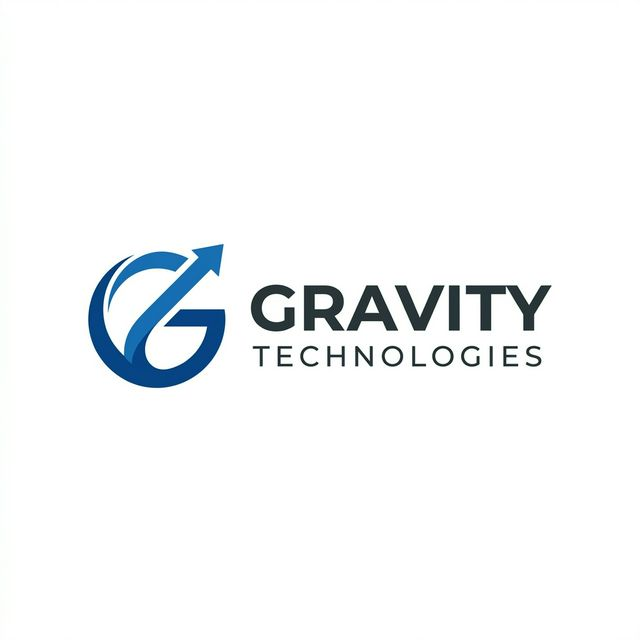
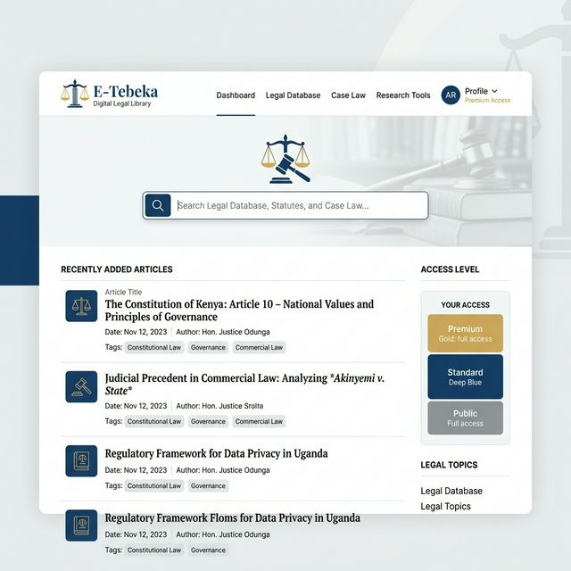
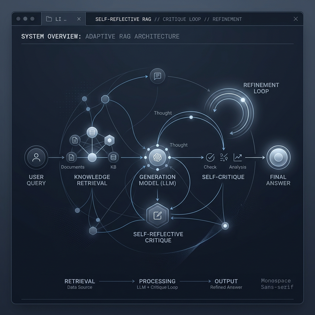
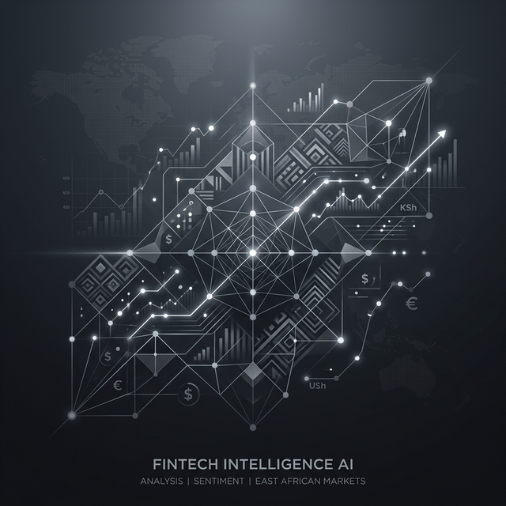
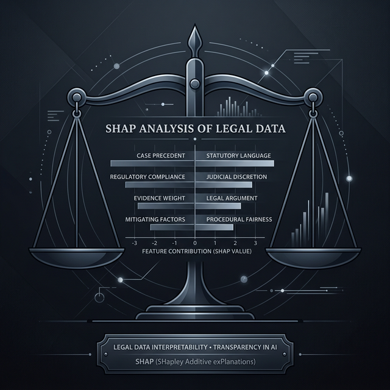
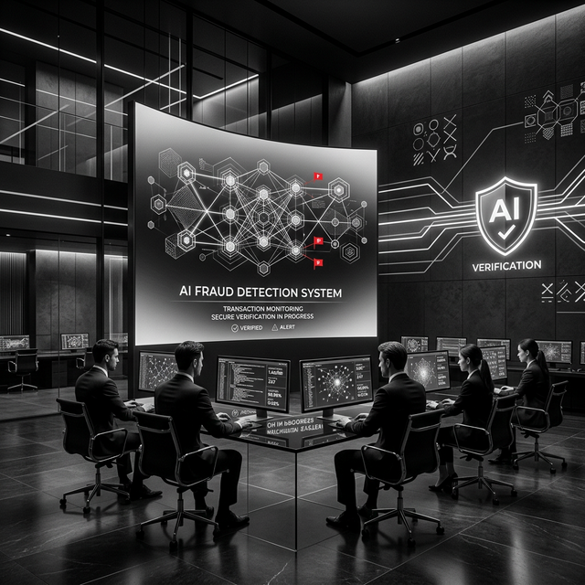
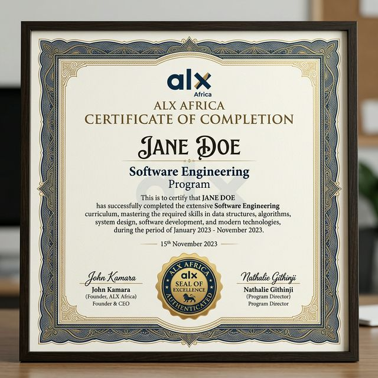

Savanna Management System
A comprehensive full-stack CRM/ERP platform featuring multi-role dashboards and secure Google OAuth/JWT authentication.
View ProjectSpecializing in the intersection of Retrieval-Augmented Generation, Model Interpretability, and Scalable AI Infrastructure. Currently based in Addis Ababa, Ethiopia.




A comprehensive full-stack CRM/ERP platform featuring multi-role dashboards and secure Google OAuth/JWT authentication.
View Project
Ethiopian law digital library with AI-powered document parsing, full-text search, and tiered access systems.
View Project
Sophisticated RAG architecture featuring built-in self-critique capabilities for real-time answer integrity.
View Project
AI-powered analysis system for CrediTrust Financial, transforming unstructured feedback into strategic insights.
View Project
Applying Explainable AI (SHAP) to interpret predictive models of judicial outcomes with visual analytics.
View Project
End-to-end detection system achieving 0.96 AUC-ROC while maintaining full model interpretability.
View ProjectIntensive AI mastery focused on the Ethiopian FinTech sector, specializing in job-ready GenAI and ML engineering workflows.
Digital transformation and UI/UX projects for high-profile business clients across Ethiopia.
Research and Development for international clients, focusing on AGI, Robotics, and Bioinformatics.



I'm currently open to collaborative projects and full-time opportunities at the intersection of Software Engineering and AI.
Get In Touch